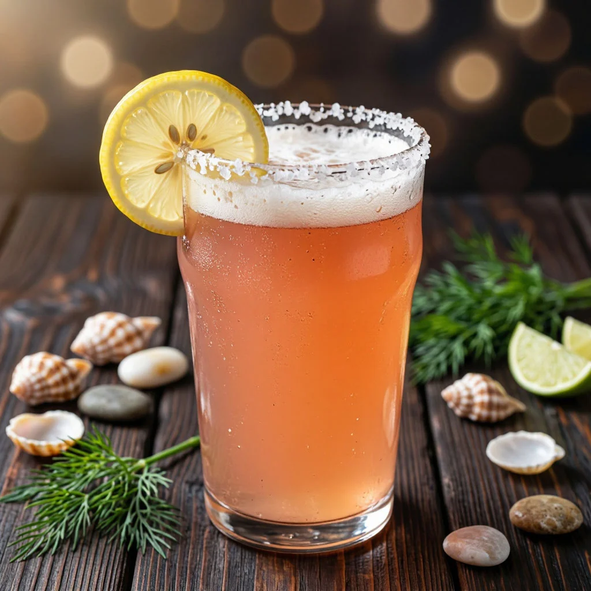

ДАЙДЖЕСТ / BODREEVSHOW
Соленое пиво: Гозе

Солёное пиво: гозе и его вариации в домашних условиях
Если вы уже пробовали балансировать фруктовые ноты в элях , собирать травяной профиль с чабрецом и зверобоем или выводить шоколадно – кофейные оттенки в стаутах, солёное пиво станет для вас следующим логичным шагом в освоении контрастов. Гозе — это как раз про баланс несочетаемого: лёгкая солоноватость, кислинка, пряность и при этом чистая питкость. А ещё это отличный полигон для экспериментов: от классического лейпцигского варианта до томатного, огуречного и даже фруктово-солёных миксов.
Что такое гозе и откуда взялась соль
Гозе — пшеничное кислое пиво с солью и кориандром. Исторически стиль родом из Германии (изначально из Гослара, потом закрепился в Лейпциге). Соль в нём не «морская драма», а тонкий штрих: она не должна кричать «рассол», её роль — подчеркнуть минеральность, раскрыть солодовую базу и усилить ощущение свежести.
Есть легенда, что соль появилась из-за местной воды с минеральными примесями, но в домашнем пивоварении вы сами контролируете этот момент. Ключевой нюанс: соль не маскирует дефекты, она подчёркивает то, что уже есть. Если сусло получилось плоским или «ватным», соль сделает это только заметнее. Поэтому база должна быть чистой, а закисление — аккуратным.
Ключевые элементы профиля гозе
Кислинка. Формируется лактобактериями (молочнокислое брожение). В традиционном гозе кислинка мягкая, не «уксусная».
Соль. Даёт ощущение минеральности и «хрусткости». Правило: лучше недосолить, чем пересолить. На вкус соль должна едва улавливаться.
Кориандр. Даёт цитрусово-пряную ноту, которая дружит с кислинкой и солью. Важно не перемолоть в пыль: грубый помол даёт более чистый аромат.
Тело и карбонизация. Гозе делают лёгким и высокогазированным (2,7–3 объёма CO₂). Высокая карбонизация «подсвечивает» соль и кислинку.
Хмель. Почти не чувствуется: горечь минимальная (обычно 10–15 IBU), аромат нейтральный.
Как закислять: 3 рабочих метода для дома
Выбор способа влияет на сроки, предсказуемость и «характер» кислотности.
Блендинг (смешивание). Вы варите нейтральное пиво и смешиваете с кислой основой (например, с берлинер-вайссе, который специально закисляли). Плюс — полный контроль кислотности. Минус — нужно две варки.
Закисление сусла лактобактериями до основного брожения. Вы вносите лактобактерии в сусло при 38–45 °C на 24–48 часов, затем кипятите, чтобы остановить закисление, и дальше варите как обычно. Плюс — чистый процесс и стабильная кислотность. Минус — нужна температурная стабильность.
Совместное брожение с лактобактериями. Дрожжи и лактобактерии работают одновременно. Плюс — интересный комплекс эфиров и кислот. Минус — сложнее контролировать уровень кислотности.
Для первого раза лучше взять метод закисления сусла: он даёт самый стабильный результат и меньше сюрпризов.
Какую соль брать и сколько
Тип соли. Нужна чистая нейодированная соль без антислёживателей. Подойдёт морская, гималайская розовая или обычная поваренная. Йодированная соль может дать «аптечный» тон.
Дозировка. Для 20 литров гозе оптимально 10–15 г соли. Это примерно 0,5–0,75 г/л. Если хочется более заметной минеральности — до 20 г, но не больше.
Когда вносить. Можно на варке (за 10–15 минут до конца), можно в ферментер на вторичное брожение. На варке соль гарантированно стерильна; на вторичном вы точнее контролируете вкус.
Кориандр: тонкости
Форма. Лучше всего — целые семена, грубо измельчённые (не в порошок) непосредственно перед внесением.
Дозировка. 15–20 г на 20 литров. Если переборщить, появится навязчивая «мыльная» нота.
Когда. За 10–15 минут до конца варки или на вторичное в мешочке на 2–3 дня.
Вариации гозе: от классики до смелых экспериментов
Классический лейпцигский гозе. Пшеничный профиль, мягкая кислинка, соль, кориандр. Тело лёгкое, карбонизация высокая.
Томатный гозе. Томаты добавляют на дображивание. Важно: это именно варка с томатами, а не коктейль. Томат даёт кислотность, сладость и «мясистость». Доза: 1–2 кг томатного пюре на 20 л.
Огуречный гозе. Свежий огурец даёт водянистость, поэтому лучше использовать сушёный или концентрированное пюре. Доза: 300–500 г на 20 л на вторичное.
Фруктово‑солёный гозе. Лёгкая соль подчёркивает фруктовую кислотность. Хорошо работают малина, лайм, ананас. Фрукты вносят на вторичное, соль — либо на варке, либо на вторичное. Логика похожа на то, как вы собирали малиново‑ананасовый эль: баланс кислоты, сладости и «опорной» ноты.
Пряный гозе. Вместо (или вместе с) кориандром можно добавить тмин, фенхель, цедру лайма. Дозировки микроскопические: тмина 3–5 г/20 л, фенхеля 2–3 г/20 л.
Этот рецепт заточен под метод закисления сусла лактобактериями — самый предсказуемый для первого раза.
Важные нюансы и частые ошибки
Важные нюансы и частые ошибки
Пересол. Соль не убирается. Сделайте мини‑тест: возьмите 1 литр нейтрального светлого пива, добавьте 0,6–0,7 г соли и попробуйте. Так вы поймёте, какой уровень солёности вам комфортен.
Слишком резкая кислотность. Если кислинка «уксусит», значит, в процессе были проблемы с санитарией или вы дали развиваться ацетобактериям. Молочная кислота мягкая, уксусная — резкая.
Избыток кориандра. «Мыльная» нота появляется от эфирных масел при слишком мелком помоле и больших дозах.
Низкая карбонизация. В гозе карбонизация критически важна: она собирает воедино соль, кислинку и солод.
Примеры удачных экспериментов, если хочется выйти за классику
Томатно‑солёный гозе. 1,5 кг томатного пюре + 15 г соли + 10 г кориандра на 20 л. Томат вносите на вторичное брожение на 3–4 дня в мешочке.
Лаймово‑солёный гозе. Цедра 2 лаймов + 15 г соли на 20 л. Цедру снимайте только жёлтую часть, без белой мякоти. Вносите на вторичное на 2–3 дня.
Малиново‑солёный гозе. 400 г малинового пюре + 12 г соли на 20 л. Соль можно на варке, малину — на вторичное 3–4 дня. Здесь та же логика баланса, что и в фруктовом пиве, только соль выступает «усилителем» кислотности малины.
Мини тест, чтобы подобрать свой профиль
Сделайте 4 бутылки по 0,75 л на базе простого пшеничного пива с уже готовой мягкой кислотностью (pH ~3,4):
Контроль (без соли/пряностей).
Соль 0,7 г/л (нейтральный профиль).
Соль 0,7 г/л + кориандр 1 г/л на 2 дня.
Соль 0,7 г/л + цедра лайма 0,5 г/л на 2 дня.
Выдержите добавки в мешочках, снимите с добавок, сравните. Так вы найдёте свою точку баланса между солёностью, пряностью и кислотностью.